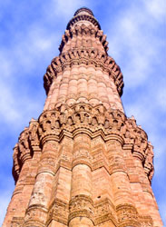

Qutab
Minar, the 239ft sandstone tower is an Indo-Islamic
architectural wonder of ancient
King Qutubuddin Aibak of
Slave dynasty laid the foundation of the Qutab Minar in 1199, adjoining the Quwwat-ul-Islam
mosque, to proclaim the victory of Islam, after
the defeat of the last Hindu kingdom in
The word 'Qutab Minar' means 'axis minaret'. The tower which dominates the countryside for miles around has five storeys, each marked by a projecting balcony. The tower was built in three stages. Qutab-ud-Din completed the first storey. Second, third and the fourth were completed by his successor and son-in -law, Illtutmish in 1230. The minar was first struck by lightening in AD 1368 and the fallen top storey was replaced by two storeys's, the fourth and the fifth in 1370 AD by Feroz Shah Tughlaq (AD 1351-88).
Qutab Minar with a
height of 72.5m (239ft), is the highest stone tower in
The decoration of the Qutab Minar is consistently
Islamic in character from base to top; though the somewhat hybrid style of Firoz Shah's later additions is noticeably
distinct. Numerous inscriptions in Arabic and Nagari
characters are seen as wide encircling bands in the plain fluted masonry of the
Minar. This inscriptions reveal the history of Qutub, from its commencement in AD1199 to its repairs in
between..
There is a door on the northern side, leading inside the tower to a spiral stairway with 379 steps that winds its way up to the balcony in each floor and culminating in a platform at the top. The intricate balconies held together by stalactite vaulting technique and patterned with honey combing is a special feature of the minar.
The minar has survived a series of lightening
bolts and earthquakes during the past centuries. After the first lighting
strike way back in AD1368 knocking off the top storey and two floors replaced
instead, by Firoz Shah Tuglaq,
inscriptions indicate that further repairs were done by Sultan Sikander Lodi in 1503. Later in 1803, the cupola on the top
was thrown down and the whole pillar was seriously injured by an earthquake. It
was repaired by Major R. Smith of the Royal Engineers who restored the Qutub Minar in 1829 replacing the
cupola with a
Today, this impressively ornate tower has a slight tilt, but otherwise has worn the centuries remarkably well. The staircase inside the tower to the balconies has been closed following an accident in early 1980's when a party of school girls panicked when the lights failed and a stampede led to a number of deaths.
Best Route to reach there
Air :
Rail :